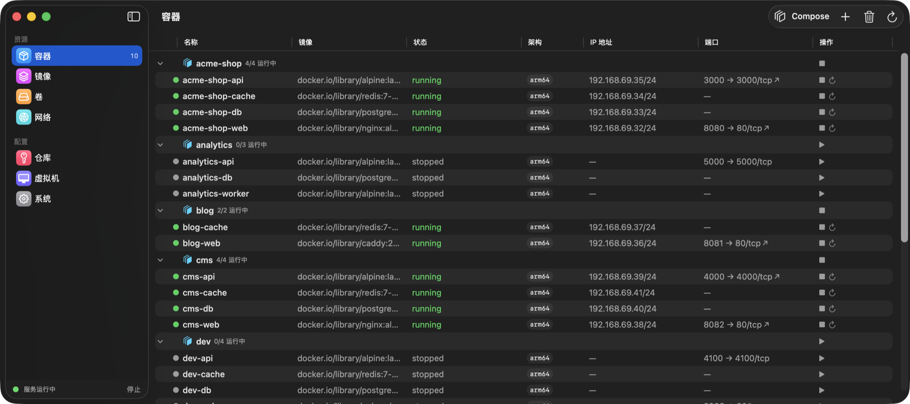
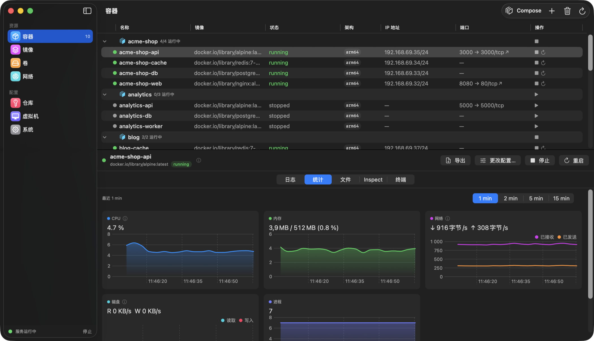
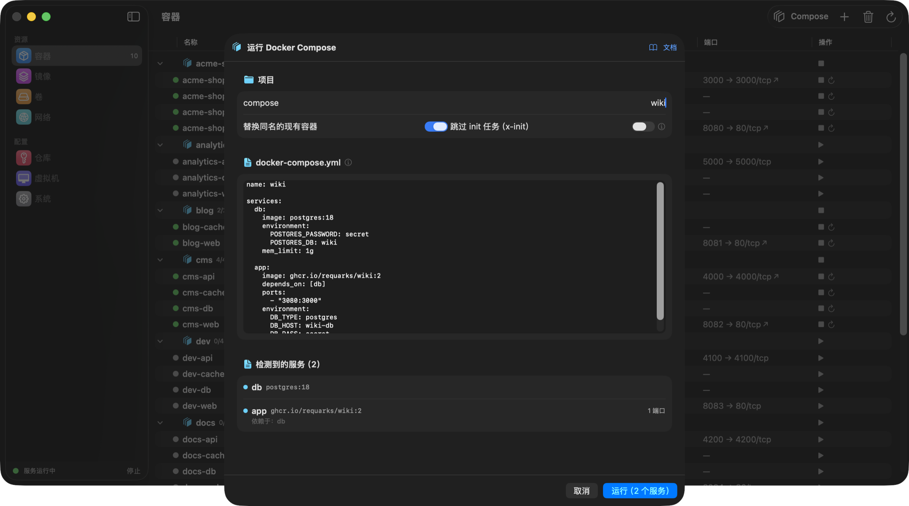
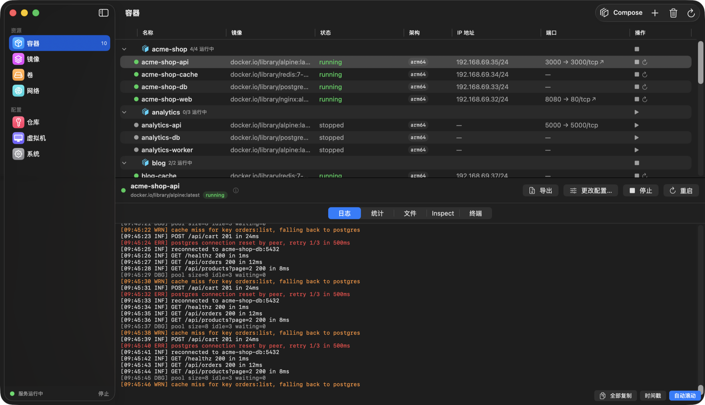
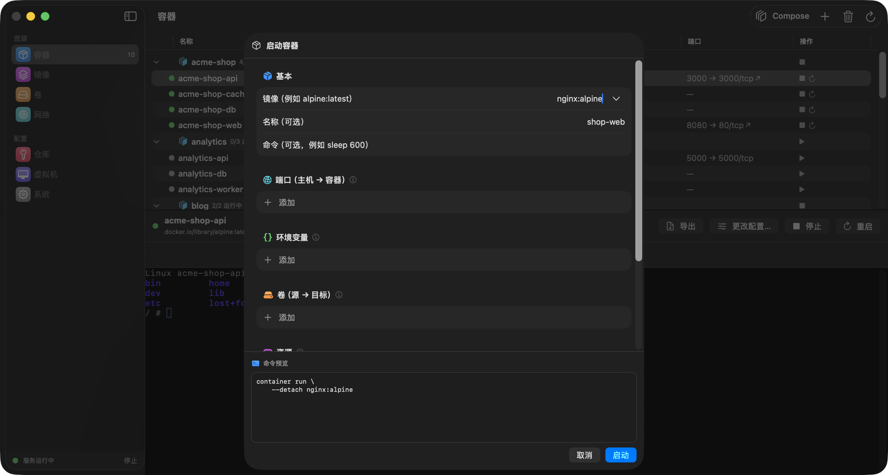
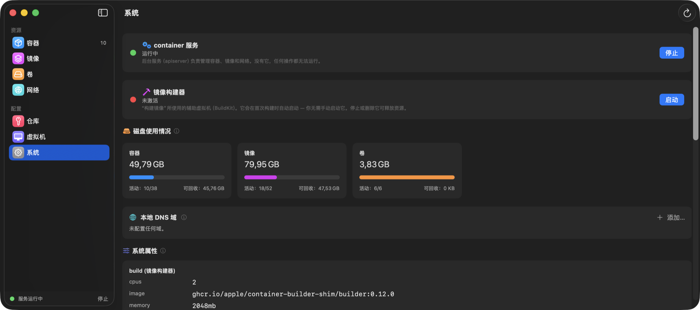

免费开源 · macOS 26 · Apple Silicon
Container Desktop
为 Apple 的 container CLI 打造的原生 macOS 应用。
可以理解为 Docker Desktop —— 但用 SwiftUI 构建，并且 不重新实现任何逻辑：
每个操作都调用官方 CLI，所以应用显示的永远是 CLI 眼中的真实状态。
目前尚未公证 —— 首次启动时请使用 系统设置 → 隐私与安全性 → 仍要打开，
或者从源码构建：xcodegen generate && xcodebuild。

CLI 的全部能力，都在一个窗口里
容器
运行、停止、重启，或用修改后的配置重新创建。每个容器都有日志、文件浏览器、inspect 和内嵌终端（exec -it）。
实时统计
CPU、内存、网络和磁盘图表每秒刷新，可选时间窗口，悬停查看采样点。原生 Swift Charts。
Docker Compose
粘贴 docker-compose.yml —— 项目网络、依赖顺序、分组显示的容器、一次性 x-init 初始化任务、host.containers.internal 别名，以及自动写入的服务主机名。
镜像
拉取，或从 Dockerfile 构建，进度实时流式显示在对话框中。也可以直接从任意镜像运行容器。
卷与网络
创建、inspect、prune。在运行对话框中挂载命名卷或任意本地文件夹。
注册表与虚拟机
私有注册表登录（密码通过 stdin 传递），以及容器虚拟机的完整生命周期管理。
系统与菜单栏
带结果校验的服务控制、磁盘占用、服务日志、本地 DNS —— 以及可一键操作的菜单栏附加项。已本地化为英语、波兰语和简体中文。
快速一览
实时图表
每秒采集的 CPU、内存、网络与磁盘吞吐量，时间窗口可选 —— 悬停任意图表即可查看具体采样点。

Compose 项目
粘贴的 docker-compose.yml 会成为容器列表上的一个分组 —— 批量启动、停止和删除，项目网络自动创建。

日志与终端
按级别着色的日志查看器，支持连续选择和可选时间戳 —— 以及通过 exec -it 进入容器内部的真实终端。

运行对话框
端口、环境变量、卷、资源、amd64 + Rosetta —— 并附上可直接复制粘贴的完整 CLI 命令预览。

一眼看清系统状态
用平实的话解释服务与 builder 状态、带可回收空间的磁盘占用、易读的系统属性以及服务日志。
